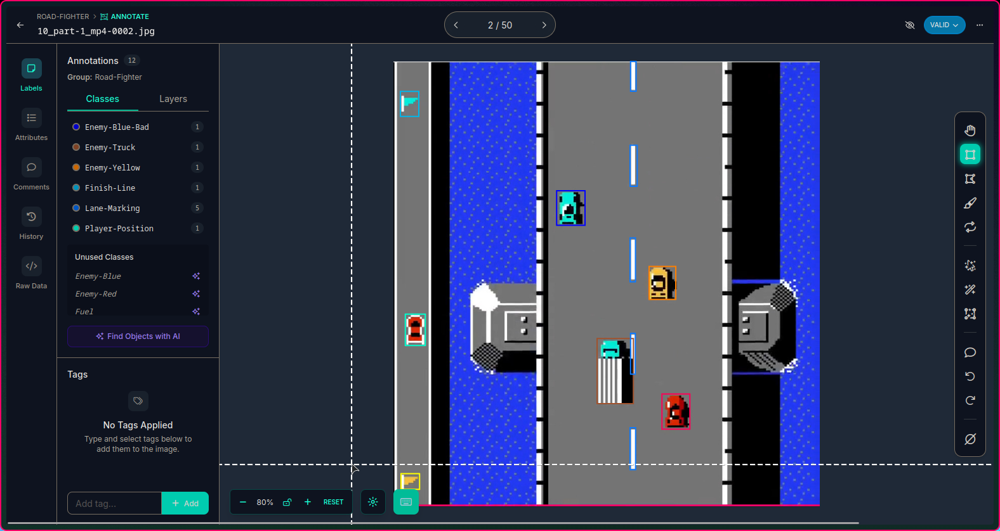
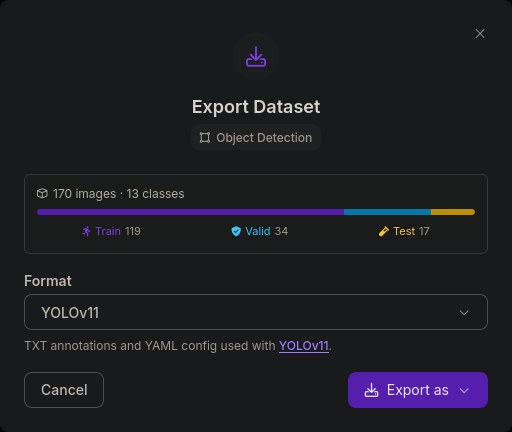
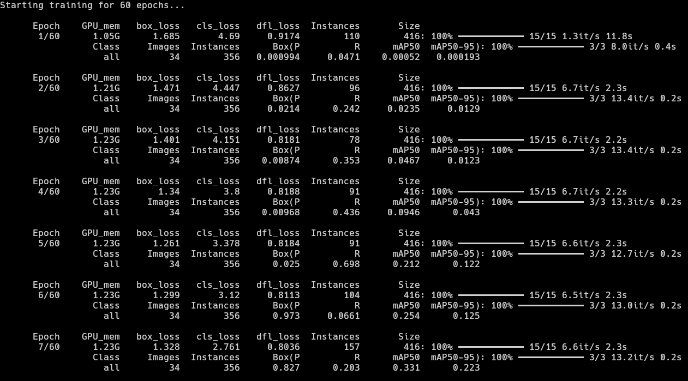
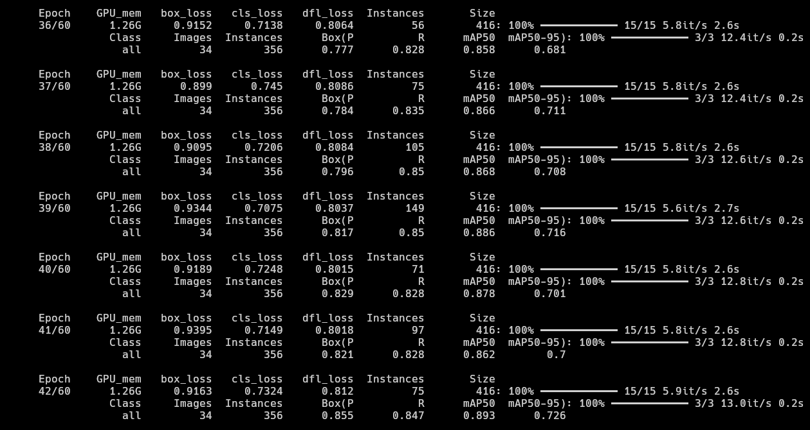
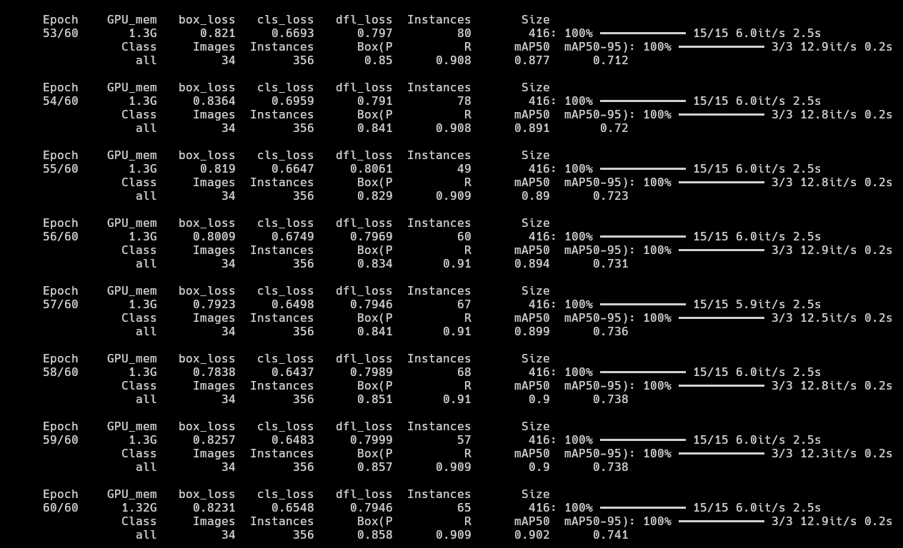
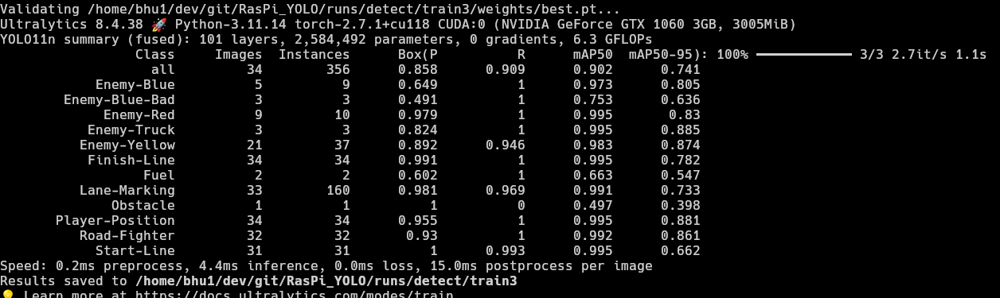

There's a way to do it better -
find it.
- Thomas A. Edison

15 years later...
I'm still trying to beat the game ^_^"

I’ve revisited this idea multiple times (ずっとずっと) since my university hackathons, where I initially relied on basic OpenCV techniques like color masking. Those approaches felt limited, so I rebuilt the system using the Sony IMX500, running a custom fine-tuned YOLO11 model directly on the sensor. The system operates on metadata only, sending results to a Raspberry Pi Zero 2 W to drive real-time control via USB HID, forming a low-latency vision → action loop without transferring image data.
There are various model to choose from. I chose YOLO11 mainly because it has a much more stable and standard way of fine tuning models for the IMX500 sensor specifically. I have also tested various other models as seen in my GitHub repo, but they have less accuracy scores when compared to yolo11.
Table of contents →
- Custom Dataset and Labeling
- Fine-Tuning on custom dataset
- Exporting model to IMX500
- Testing model on RPi Zero 2 W
- Switching to metadata-only
- Applying Logic to make the agent smarter
- Finishing the loop: Button Input
Custom Dataset and Labeling
The following tools were used to generate and label the dataset.
- FCEUX → running the game on PC
- OBS Studio → recording the game video
- ffmpeg → splitting the video into individual image samples
- roboflow → labeling the images
roboflow looks like. On the left, there are the classes and on the right are the bounding boxes I put on all the images. In total, I labelled 170 images, which is very few, but I wanted to experiment whether such a small number would be enough given the game's sprites are exatcly the same throughout the whole game and there is zero post-processing.

Fine-Tuning on custom dataset
- I selected a 70:20:10 split as shown in the image below ⇣

- This split is required as it is a good balance to make sure the model is tested on all classes of data and doesn't miss anything or trains on less data.
- Using the yolo command line tool, I trained the model on these parameters.
yolo detect train model=yolo11n.pt data=data.yaml epochs=60 imgsz=416 amp=False batch=8 - As we can see here, the precision in the first few epochs are not very good, but improving in the right direction. Main improvement is in
Recalldue to zero post-processing filters and simple sprites in the game. There was one major spike in themAP50in the 4th epoch but the model clearly got overconfident there and reverted back to 0.2s. There is very little improvement inPrecisionand a major dip inPrecisionfrom0.698to0.0661but we will see better results much further.
- At epoch 36, the model finally scored above
0.85 mAP50. TheRecallis also pretty good at around the~0.85range. We can see the model has essentially finished learning and reached saturation. The epochs after this give minimal improvement if any.
- Since the training was happening so quickly on my GPU, I decided to let it run and watch how it performs by the end of 60 epochs. It reached the
~0.9 mAP50scores with~0.9 Recallwhich is pretty good. It also produced a goodmAP50-95score of~0.74by the last epoch which is really good for my use case as the game in question uses simple sprites and out of16 frames per second, the model would recognize objects at least once in 2 or 3 frames in the worst case scenario.
- I initially thought class imbalance would be a problem as there are
Lane-Markingsin every single image of the dataset, that is why some classes likeObstacle (0.497), Fuel (0.663) and Enemy-Blue-Bad (0.753)have relatively badmAP50scores. But the model works fine overall.
A better solution instead of depending on the "it might get detected at least once in 2 frames" hope, I could add more images of the classes that have very less labels to balance the dataset and train the model again. That will defnitely get the model to near perfect results, given the simiplicity of the classes.
Exporting model to IMX500
Testing model on RPi Zero 2 W
- After the zip file was extracted, I ran the train script from the official ultralytics documentation. This code produces a
packerOut.zipfile. - The packer.out file is then moved to the RPi. In my case, I hosted a quick web server using
python -m http.serverand downloaded it on my raspberry pi. - Folder structure on RPi
yolo11n_imx_model
├── dnnParams.xml
├── labels.txt→ Has to be manually created (example), other files will be generated automatically.
├── packerOut.zip→ Has to be placed in the right directory.
├── model_imx.on
├── model_imx_MemoryReport.json
└── model_imx.pbtxt - ok →
- ok →
- ok →